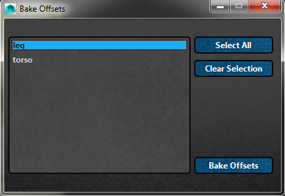

ART_BakeOffsetsUI¶
Author: Jeremy Ernst
-
class
Interfaces.ART_BakeOffsetsUI.ART_BakeOffsets(mainUI)[source]¶ This clas builds a UI that allows the rigger to select modules to bake offset mover values up to the global mover controls, making the offset movers no longer offset from their global mover parents. It can be found on the rig creator toolbar with the following icon:
- The full interface looks like this, listing found modules in the scene to select and bake offsets down to.
- 
-
__init__(mainUI)[source]¶ Instantiates the class, getting the QSettings and then calling on ART_BakeOffsetsUI.buildBakeOffsetsUI to create the interface.
Parameters: mainUI – The instance of the Rig Creator UI where this class was called from. See also
ART_BakeOffsetsUI.buildBakeOffsetsUI
-
bakeOffsets()[source]¶ Tales selected modules listed in the QListWidget and bakes the offset mover values up to the global mover parent. This is achieved by creating a locator in the space of the offset mover, zeroing the offset mover out, and constraining the global mover to the constraint. Finally, the constraints are removed and the locators deleted.